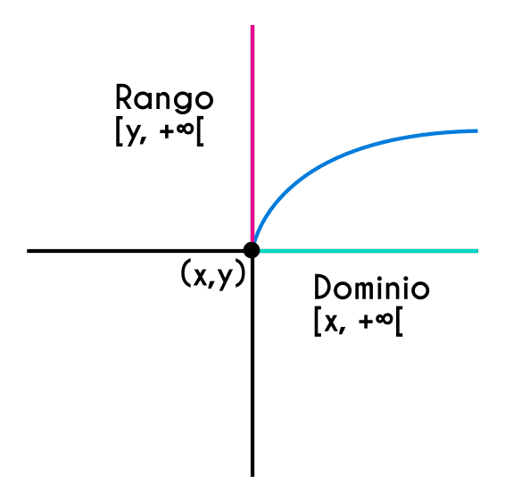

La gráfica de una función raíz cuadrada corresponde a la mitad de una parábola como las que conocemos de la función cuadrática, pero en este caso el eje de simetría de la media parábola es horizontal (paralelo al eje de las abscisas).
El dominio de la funcion raiz cuadrada comprende todos los positivos incluyendo el cero, pero la restriccion es que no comprende los numeros negativos, por lo tanto haremos las siguientes comprobación de los ejemplos que se mostraran:
CALCULADOR DE VALORES DE RAIZ CUADRADA:
Ingrese un numero para una raiz cuadrada RESULTADO: